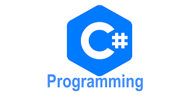

Ruby was mainly designed as a general-purpose scripting language, which provides the wide support for the different applications of ruby. It is mainly getting used for a web application, standard libraries, servers, and other system utilities. Ruby has one of the great strength is metaprogramming.
Learn about the best use of Ruby.

Python is a general purpose and high level programming language. You can use Python for developing desktop GUI applications, websites and web applications. Also, Python, as a high level programming language, allows you to focus on core functionality of the application by taking care of common programming tasks.
Important reasons why you should use Python.

C# can be used to create almost anything but is particularly strong at building Windows desktop applications and games. C# can also be used to develop web applications and has become increasingly popular for mobile development too.
Why it is worth learing C#?
